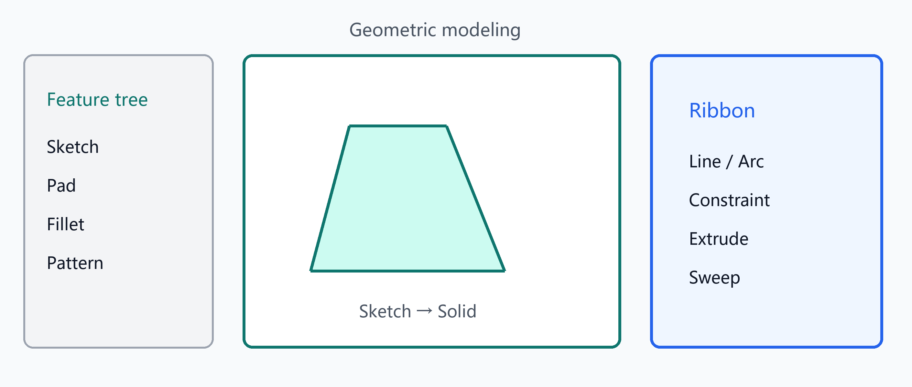

Geometric modeling workspace
Geometric modeling workspace
Switch to Geometric Modeling for ribbon, feature tree, and parameter panels.
- Feature tree edit/hide/delete/rollback; Undo/Redo; named parameters
- Sketch tools: line, arc, circle, rect, ellipse, polygon, slot, spline, construction
- Dimensions & constraints (H/V, coincident, parallel, …); project/convert/offset
- Solids: Pad/Pocket, Sweep, Revolve, Fillet/Chamfer, patterns, mirror, loft, shell, draft, datum planes
- Script modeling: history/compose JSON and
cloudsim_geom